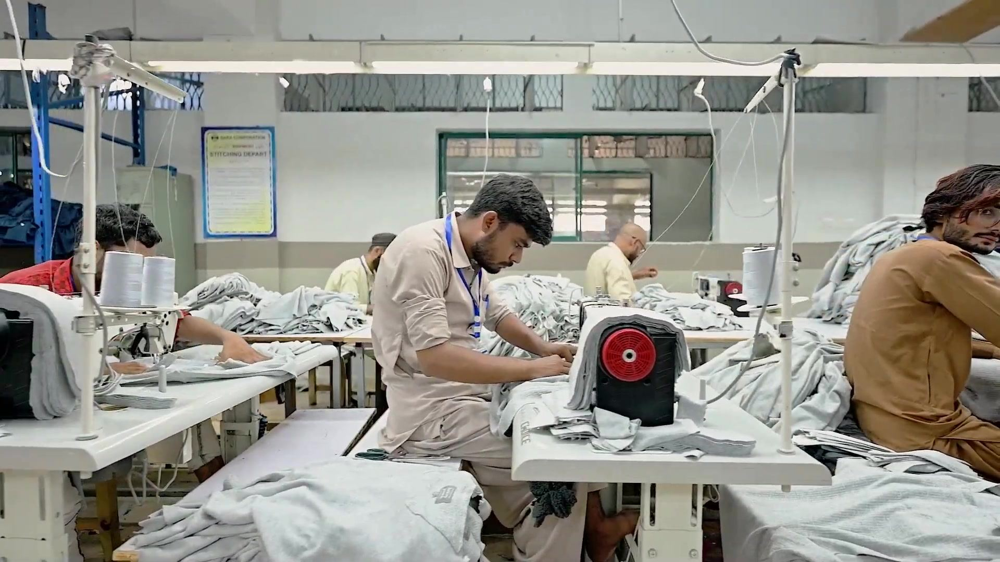

High Temperature Cone Dyeing
Yarn dyed in house before it reaches the knitting floor.
Computerised circular and flat knitting from gauge 4 to 12, backed by a special hand knitting facility for classic sweaters and a full linking and sewing department.
Circular and flat knitting machines here are fully computerised across gauges 4 to 12, which gives repeatable structure on complex pieces. Alongside them sits a special hand knitting facility, kept deliberately, for classic sweaters that machines do not do justice to.
The unit is supported by high temperature cone dyeing and the full-fledged centralised testing laboratory that serves every division.


Yarn dyed in house before it reaches the knitting floor.
Full-fledged lab shared across every unit.
Circular and flat machines, gauges 4 to 12.
Kept specifically for classic sweaters.